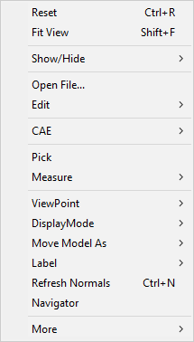
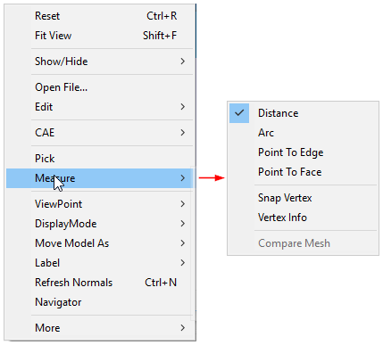
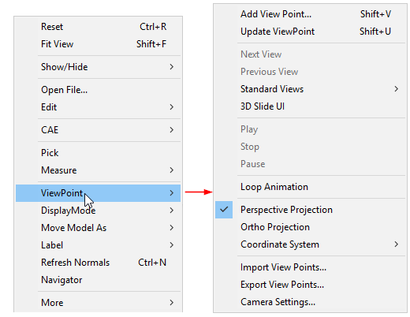
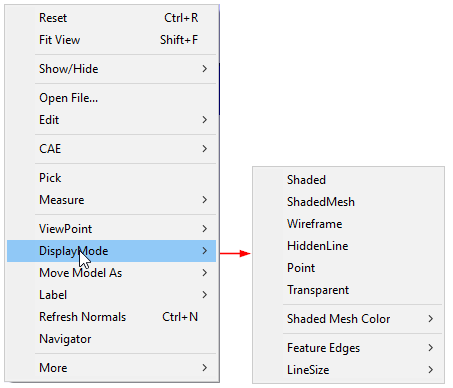
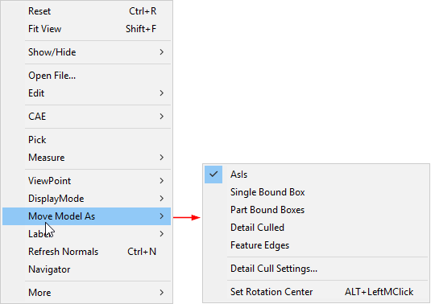
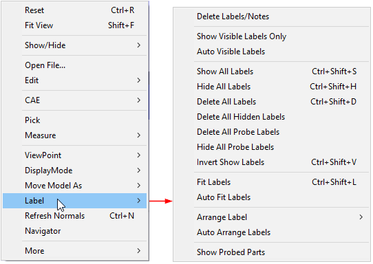
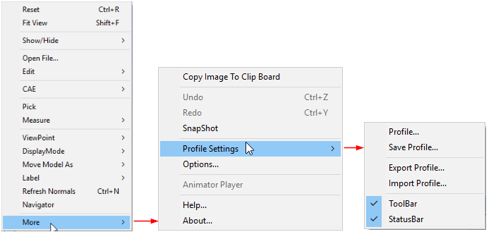

Context Menu
VCollab Pro offers its users a context menu with various options that correspond to main menu options. The context menu opens up on the right mouse click event in the viewer. It helps in making a user’s interaction with a model more efficient and quick.
Context Menu

| Reset | Resets view or displays standard front view |
|---|---|
| Fit View | Fits all parts of the model into the scene and displays. |
| Show / Hide | Provides different types of show - hide options. |
| Open File | Interface to load a CAX file. |
| Edit | Enables users to edit in Background, Mouse Customization, Product Explorer,Explode and Section. |
| CAE | Lists all CAE functionalities. |
| Pick | Allows users to pick, move and drop a part. |
| Measure | Allows users to measure distance and arc objects. |
| ViewPoint | Allows users to create a viewpoint and animate a view path. |
| Display Mode | Allows users to change display modes into different types. |
| Move Model As | Increases Rendering performances. |
| Label | Allows users to change visibility and delete labels/notes. |
| Refresh Normals | Recomputes normals and provides proper lighting to the model. |
| Navigator | Allows Passive Transform mode and displays the GUI on the right side of the viewer. |
| More | Shows more options. |
Sub Menu items
Show / Hide

| Hide Part | Hides the selected part(s). |
|---|---|
| Hide Other Parts | Hides all parts except the current selected one. |
| Show All Parts | Displays all parts. |
| Invert Visible Parts | Displays hidden parts and Hides displayed parts. |
| Deselect All Parts | Deselects all type selections. |
| Delete All Visible Parts | Deletes all visible parts |
| Delete All Hidden Parts | Deletes all hidden parts |
| Axis | Displays the axis |
| Origin | Displays Origin settings |
| Full Screen | Makes the viewer window full screen |
| Properties | Displays the properties |
CAE

| Result List... | Lists all results available for current dataset. |
|---|---|
| CAE Settings... | Allows users to edit and update legend. |
| Scale Factor... | Allows users to scale the model. |
| Animate... | Animates the CAE Model. |
| Animate Settings... | Allows users to define the animation. |
| Probe | Allows users to probe node/element and display the information on the viewer. |
| Probe Type | Allows users to select a probe type. |
| Hotspot Finder | Allows users to find CAE hotspots on the model. |
| Display | Allows users to modify CAE display attributes. |
| Symbol Plot... | Allows users to plot symbols at user defined vertices. |
| CAE Results | Allows users to set current result operations. |
| NodeSet Manager | Allows users to group a set of nodes and use it in other functional modules |
Measure

| Distance | Allows users to measure distance between points. |
|---|---|
| Arc | Allows users to measure arc / circle. |
| Point To Edge | Allows users to measure the shortest distance between a point and an edge. |
| Point To Face | Allows users to measure the shortest distance between a point and a polygon. |
| Snap Vertex | Allows users to select the nearest vertex while clicking on the model for measurement. |
| Vertex Info | Displays x, y, z coordinates of current mouse position on the model. |
| Compare Mesh | Allows users to compare two meshes and its deviation. |
ViewPoint

|
Display Mode

| Shaded | Displays model faces shaded. |
|---|---|
| Shaded Mesh | Displays model faces shaded with mesh triangles. |
| Wireframe | Displays model in wireframe mode. |
| Hidden Line | Displays model in wireframe mode after removing hidden lines. |
| Point | Displays model vertices. |
| Transparent | Displays model with 50% transparency. |
| Shaded Mesh Color | Allows users to modify shaded mesh line color (either contour color or user defined color). |
| Feature Edges | Allows users to modify feature edge properties. |
| Line Size | Allows users to modify line width of mesh between 1 to 5 range. |
Move Model As

| As Is | Displays the model in default mode. |
|---|---|
| Single Bound Box | Renders a single bound box while motion model takes place. |
| Part Bound Boxes | Displays a bound box for each part in the model, while motion model takes place. |
| Detail Culled | Displays the parts which consist of, at least 30% volume relative to model volume. |
| Feature Edges | Displays feature edges during motion model. |
| Detail Cull Settings... | Allows users to modify detailed cull percentage. |
| Set Rotation Center | Allows users to set motion model rotation center on the part. |
Label

More |

|